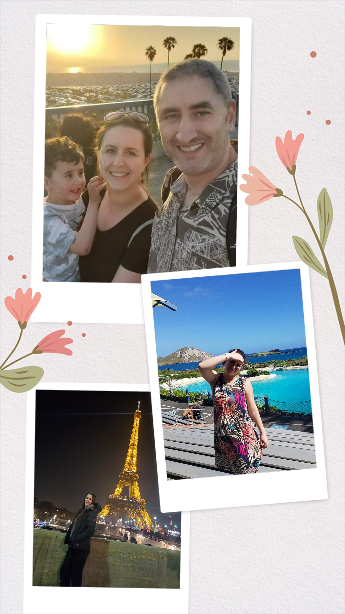

A hobby that we all share in my household is hiking or simply being in nature. Our craziest hike ever was Dirtyface Peak Trail in Lake Wenatchee. We were attacked by mosquitoes until we reached the waterfall. In case you are going there, do not forget your insect spray, I wish I have read the reviews before. We are thankful we live in Washington since we can never run out of places to discover. My favorite season for hiking is fall. I love all the colors and the weather is just perfect.
I think the reason I like baking is that the sweets always taste good. I love making traditional sweets the most because they require fewer ingredients and I think they taste better than the new recipes. My oldest son likes to help me a lot and his favorite part is decorating to make it look fancy.
My goal in life is to visit as many cities and countries as my wallet allows it. So far, we have done Istanbul (Turkey), Paris (France), Hawaii, San Diego, and New York. Our next destination will be Spain. We love discovering other cultures, food, landscapes, and everything.
Berber jewelry is more than simple jewelry. They tell a story about nature. The three basic colors used are blue for the sea, green for the land, yellow for the desert. Even though the artisans are trying to bring a modern touch to the jewelries, I personally like everything that is old just like the once our grandmothers owned.